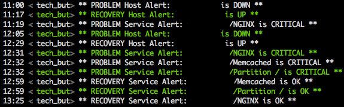

Rails SA Practice
Sheng-Zhe Lin
Ruby Conf Taiwan
August 27, 2011
Sheng-Zhe Lin
Ruby Conf Taiwan
August 27, 2011
Sheng-Zhe Lin 林聖哲
Rails developer and linux system administrator at Techbang.
Nagios + Cacti
services current status, unusual situation or crash alert

devices data graphing solution
save me
HAProxy F5 BIG-IP
Rails Asset Cache
merge multiple css or js files into one file
decrease http requests
processing view generate when it not exist
Jammit
capistrano deploy hook
config/enviroments/production.rb
MEMCACHE_SERVERS = ["192.168.100.3:11211", "192.168.100.4:11211"]
config.cache_store = :mem_cache_store, MEMCACHE_SERVERS, {
:namespace => "techbang"
}
Whenever + Backup Gems
Cron jobs in Ruby
Linux Crontab Format
# min hour dom mon dow command
| every :hour | every 3.hours | every 1.hour, :at => 30 |
| every 1.day, :at => '4:30 am' | every '0 0 27-31 * *' | |
job_type: command, rake task
# whenever config/schedule.rb every 1.day, :at => "23:45" do command "echo 'Say Hello!'" rake "mail:notification" end # generated crontab 45 23 * * * /bin/bash -l -c 'echo '\''Say Hello!'\''' 45 23 * * * /bin/bash -l -c 'cd project && \ RAILS_ENV=production bundle exec rake mail:notification'
Capistrano integration, update crontab with deploy
# config/deploy.rb set :whenever_command, "bundle exec whenever" require "whenever/capistrano"
backup perform -t local_backup
Backup::Model.new(:local_backup, "Backup!") do
backup_path = "/mnt/backup_copy/project"
backup_list = []
backup_list << "/home/rails/project/shared/system"
backup_list << "/home/rails/project/shared/config"
if File.directory? backup_path
system("rsync -ravh --delete #{backup_list.join(" ")} #{backup_path}")
end
end
Backup has a great wiki, explains each component in detail with many examples.
project/
├── current -> /home/rails/project/releases/20110819032217
├── releases
│ ├── 20110728073852
│ ├── ...
│ └── 20110819032217
└── shared
├── bundle
├── cached-copy
├── config => current/config/database.yml
├── log
├── pids
└── system => current/public/system
| Whenever | config/schedule.rb |
| Backup | config/backup.rb |
backup run at one main server only
# config/schedule.rb host = `hostname`.chomp if host == "main_server" command "cd /home/rails/project/current && \ AWS_CALLING_FORMAT=SUBDOMAIN backup perform -t local_backup \ --config_file 'config/backup.rb'" end